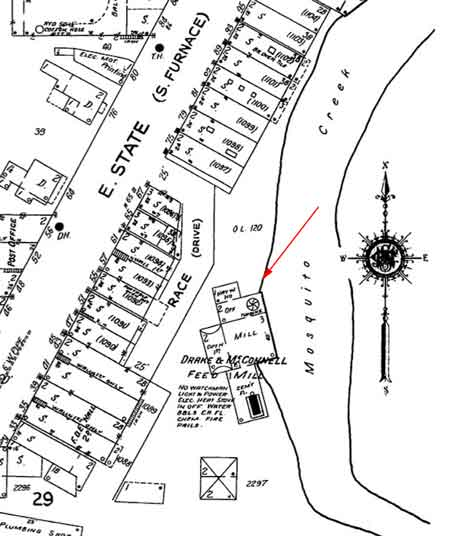

Ward-Thomas Museum


James Heaton’s Grist Mill in Niles, Ohio
Ward — Thomas
Museum
Home of the Niles Historical Society
503 Brown Street Niles, Ohio 44446
Click here to become a Niles Historical Society Member or to renew your membership
Click on any photograph to view a larger image, click on image again to zoom into photograph.
|
Grist Mill as it appeared in 1934. Early image of the Mosquito Creek dam. SO1.399 View from Central School looking
south in downtown Niles. It looked like this about 1900 when you
glanced south down Furnace Street (now State Street) The tall
building beyond Abramson Stoves and the hardware store is the
Mango Block, and the grist mill (yellow arrow)built originally
by Heaton. Smoke from the mills and frame buildings were the familiar
sights of the day. Entrance to Race Alley from East
State Street. |
The
History of James Heaton’s Grist Mill. The two brothers, Daniel and James Heaton constructed, on Yellow Creek in Poland, Ohio, the first blast furnace in the Mahoning Valley and probably the first blast furnace west of the Alleghenies, thus becoming the founders of the industry that eventually made the region one of the leading industrial areas in the United States. In about 1806, James Heaton selected
as his permanent settlement the vicinity near the junction of
Mosquito Creek and the Mahoning River. He purchased the land along
the The first project by James Heaton was the construction, about 1806 or 1807, of a sawmill and gristmill, an enterprise certain to be useful and necessary in a growing pioneer community. This was the first industry in what is now Niles. The sawmill was abandoned in the course of time, but the old gristmill, rebuilt to some extent in 1839, and bearing the deep scars of a century on its sturdy timbers, is still in use, the present proprietors being Drake and McConnell. Built of oak planks two feet wide and two and one-half inches thick, and axe-hewn beams and pillars more than one foot square, the parts fitted and held together with wooden nails, the old gristmill still stand as a century-old monument to the hard labor and capable workmanship of the pioneer builder. The saw mill was abandoned, but the old grist mill, with its sturdy timbers was still in use in 1934 by Drake and McConnell. During the more than a century of its existence the gristmill has naturally passed through the hands of a number of proprietors. One of them, Dr. A.G. Miner, in 1888 installed steam power for use in times of low water. The present owners took charge in 1908. Since about 1929 the mill machinery has been silent, and the mill is now used as a warehouse for the distribution of flour and other products milled elsewhere. To power the mill, James Heaton utilized the only available source, water. At the site of the present dam on the Mosquito Creek, he constructed a dam and south of that the gate and entrance to a mill race, leading to a huge wooden water wheel at the mill, a third of a mile distant. After the introduction of the electric power in 1915, the need for the mill race passed and finally the old land mark disappeared when the park commission in 1927 filled in the abandoned bed as a part of the Central Park improvement program. The Grist Mill building stood for sometime as a warehouse for the distribution of flour and other products milled elsewhere. In 1940 the Niles Daily Times reported the story of the blaze that destroyed the city’s oldest landmark, the Grist Mill built in 1806-1807 by James Heaton on what later became known as Race Alley, a narrow path from the dam to the grist mill.
 It was situated along the Mosquito Creek and accessed from East State Street, formerly South Furnace Street, by Race Drive. The mill raceway which powered the water wheel of the grist mill has been covered up and buildings are now located over that area.
|
|
|
|
||
|
1840 Map of Niles. PO1.665 |
1834 Map of Niles. Of the 54 lots platted in 1834, they were listed as follows: 23 lots, James & Warren Heaton 12 lots - Heaton & Robbins Lot 18 - M. Rider Lot 20 - William McKinley Sr. Lot 22 - Jacob Robinson Lot 29 - Ambrose Mason |
Lot 31 - James Heaton Lot 37 - J. Frederick Lot 42 - David Bowell Lots 43 & 44 - A. Kingsley Lots 45,46 & 47 - Thomas Evans Lot 49- school grounds Lots 48,50,51 & 52- Warren Heaton Lot 53 - John Dray Lot 54 - James Dempsey |
|
|
||
|
1882 Panoramic Map of Niles. PO1.654 |
1882 panoramic map of Niles. Red line shows path of mill race from the Mosquito Creek dam to the grist mill. |
|
|
|
||
|
An undated map of Niles showing the area east of Robbins Avenue. PO1.653 |
An undated map of Niles showing the area east of Robbins Avenue and northern part of Niles by the current high school. Several entries are typed on the photo itself. Red line shows path of mill race from the Mosquito Creek dam to the grist mill. |
|
|
|
||
|
PO1.440 PO1.439 |
In 1818 James Heaton built this house on the southwest corner of what is now Robbins Avenue and Cleveland. In 1834 he sold it to Ambrose Mason and it became known as the Heaton-Mason Homestead, being occupied by five successive generations of the Mason family. It was an imposing white brick structure with wooden pegs that held the timbers in place. Its cherry circular staircase and numerous spacious rooms with fireplaces were features of the landmark. Photograph of the Heaton-Mason Residence shortly before it was demolished in 1966.
|
|
| |
||
Drawing of James Heaton, founder of Niles. |
After building his grist mill, James Heaton constructed
in 1809 a blooming forge here, which manufactured the first bar
iron in Ohio. The pig iron for this product, Heaton had obtained
from the Yellow Creek furnace in Poland, Ohio; but when war was
declared in 1812 the furnace men enlisted or were drafted and
the furnace closed. James Heaton immediately made plans to supply
his own pig iron requirements and in so doing developed an industry
that for many years was to attract settlers to the new community
in Weathersfield Township.
The Heaton forge is believed to have stood on the bank of the Mosquito Creek near the Baltimore and Ohio railroad bridge across the creek. In 1812 James Heaton borrowed $1,448 from his brother, John, and in 1813 completed the construction of a charcoal blast furnace capable of producing the pig iron need for the manufacture of bar iron and other products at the Heaton forge. He named his blast furnace “Maria Furnace” in honor of his daughter, Maria , believed to be the first white child born in Niles. By 1834 the settlement had reached the proper proportions of a village so James Heaton planned the streets, marked off the lot division and named the village. Until 1834 the settlement was appropriately called “Heaton’s Furnace”, but James Heaton gave it a new name “Nilestown” in honor of Hezekiah Niles , editor of the Niles Register, a Baltimore paper, who’s whig principals Heaton greatly admired. Nilestown remained the name until 1843 when the Post Office Department for convenience shortened it to “Niles” and that is how Niles got its name. Ohio Historical marker listing James Heaton's accomplishments located on South Main Street across from The McKinley Museum and Research Center. |
|
|
|
||


{kind=link}
{kind=link}
{kind=link}
{kind=link}
{kind=link}
{kind=link}
{kind=link}
{kind=link}
{kind=link}
{kind=link}
{kind=link}